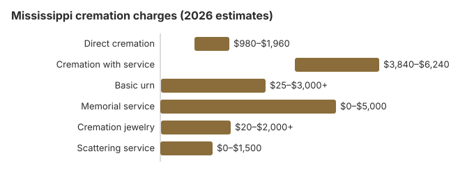

Cremation Costs in Mississippi (2026)
Burial is still the norm in Mississippi, where about 28% of families choose cremation, but the families who choose cremation pay far less: about $1,400 for direct cremation and $4,800 with a funeral service, by our estimate. Prices also vary between counties. Below are the Mississippi costs, the $25 medical examiner certificate, the state's cremation rules, and where to find help with the bill.
Mississippi Cremation Options
Direct Cremation
- Costs less than any other choice
- No visitation or service beforehand
- Taken from the place of death to the crematory
- The cremated remains are given to the family
- A memorial is still possible later
Cremation with Service
- A funeral service is held before the cremation
- A viewing can be arranged
- Held at a church or funeral home chapel
- Usually comes with a plain urn
- Similar to a burial funeral, without the grave
The Cost of Each Part of a Mississippi Cremation
| Charge | Mississippi estimate | Usual range |
|---|---|---|
| Direct cremation | $1,400 | $980 – $1,960 |
| Cremation with service | $4,800 | $3,840 – $6,240 |
| Basic urn | $50 – $300 | $25 – $3,000+ |
| Memorial service | $500 – $2,000 | $0 – $5,000 |
| Cremation jewelry | $50 – $500 | $20 – $2,000+ |
| Scattering service | $200 – $600 | $0 – $1,500 |
About the Mississippi figures: they are estimates from our model, not prices we collected from Mississippi crematories, and they are not a quote. You can read our method and the site disclaimer.
State sources: board; Miss. Code Ann. § 43-31-29.

Before You Sign With a Mississippi Provider
Settle these points with any Mississippi provider:
- Ask for the General Price List first. The direct cremation price on it must list what it includes, which ought to be the removal and transport, the cremation itself and a basic urn or box.
- Skip the casket. Mississippi providers that sell direct cremation have to allow a plain wooden box or other inexpensive container, a requirement of 16 CFR 453.3(b).
- Ask, before you sign, how many days the ashes will take, whether you collect them or they are delivered, and if a certified copy of the death certificate is included.
City and Country Prices in Mississippi
Price depends a lot on where in Mississippi you live. Around Jackson, independent cremation societies compete with full-service funeral homes, and direct cremation often sits near the bottom of the $980 to $1,960 range. In rural counties with a single funeral home, prices are usually at the top of that range or higher, so it can pay to call a provider in the nearest city.
Cremation Resources
- Funeral Consumers AllianceNonprofit advocacy: compare cremation providers
- Cremation Jewelry GuideMemorial keepsakes and remembrance options
- Cremation vs. Burial CostsSide-by-side cost comparison
- Pet Cremation CostsOptions and prices for pet cremation and memorials
- Final Expense InsuranceCoverage options to help pay for cremation costs
Compare Funeral Costs
- Average Funeral Cost in 2026National cost breakdown with real prices
- Cremation vs. Burial Cost ComparisonSide-by-side price comparison to help you decide
- Funeral Cost BreakdownEvery line item explained: know what you're paying for
- Cheapest Funeral OptionsLower-cost alternatives, with typical price ranges
- Direct Cremation: Most Affordable OptionNFDA 2023 median $2,645 with a family-supplied container (latest available)
- How to Compare Funeral PricesStep-by-step guide to getting the best price
Paying Less for Cremation in Mississippi
Two ways Mississippi families usually save:
- Collect three price lists. Ask three Mississippi providers for written General Price Lists, since direct cremation prices here can run from $980 to $1,960.
- Try a cremation society. Nonprofit cremation societies serve several Mississippi metro areas and often charge $300 to $900 less for direct cremation than full-service funeral homes, while meeting the same state rules.
Frequently Asked Questions
How much is a cremation in Mississippi?
Our Mississippi estimate is about $1,400 for direct cremation, which covers transport, the cremation and returning the ashes, and about $4,800 for cremation with a funeral service.
What cremation choices do Mississippi families have?
Mississippi families usually pick one of three: direct cremation, about $1,400, with no service; cremation first and a memorial later wherever the family chooses, priced between the two; or a funeral with a viewing and then cremation, about $4,800.
What are Mississippi's cremation regulations?
In short, Mississippi has no fixed minimum waiting period, but the crematory still needs the death certificate, a cremation permit and a signed authorization from the next of kin or designated agent before it can proceed. For the exact Mississippi citation, the funeral-director question and who takes complaints, see the cremation rules and help section lower on this page.
Where may ashes be scattered in Mississippi?
It depends on the spot. Private land needs the owner's consent, and parks and other public places have their own rules. Other Mississippi families place the urn in a columbarium, bury it in a cemetery, or keep some ashes in a keepsake.
Why is cremation growing in Mississippi?
Price is a big part of it. By our estimate, direct cremation costs about $4,500 less than a traditional funeral in Mississippi.
How soon can a Mississippi cremation happen?
Two to three hours is all the cremation itself needs. Direct cremation ($1,400) is the fastest option, with no viewing or service, and Mississippi has no minimum wait, so the permit is the main step (15 Miss. Admin. Code Pt. 5, R. 4.7.2).
Can a Mississippi family hold a funeral before cremation?
Yes, and many providers rent a casket for the viewing. Mississippi sets no waiting period, but the death certificate has to be completed and filed with Vital Records before cremation, so plan the date around that (15 Miss. Admin. Code Pt. 5, R. 4.7.2).
More for Mississippi
Mississippi's $25 medical examiner certificate
Before a Mississippi body can be cremated, a medical examiner has to certify that he has looked into the cause and manner of death and sees no need for further examination. The examiner or a deputy may charge the applicant $25 for that certificate, unless the county has already paid for a written death investigation report (Miss. Code Ann. § 41-61-69(2); checked October 29, 2026).
The fee has stood since 1993. Babies who die within 24 hours of birth, and hospital patients who die only of natural disease, are exempt unless the death falls under the examiner's jurisdiction anyway. Look for the $25 as its own line on the itemized statement.
Mississippi cremation rules and public help
The licensing office for cremation providers in Mississippi is the Mississippi State Board of Funeral Service; its number is 601-932-1973. The board has its office at 3010 Lakeland Cove, Suite W, in Flowood, and its fax number is 601-932-1901.
Mississippi families may act without a funeral director; the state is not on the Funeral Consumers Alliance list of nine that demand one. A crematory here still waits for three papers: a filed death certificate, a permit for the cremation, and written consent from the next of kin.
There is no waiting period, but the death certificate must be completed and filed with Vital Records before the cremation (15 Miss. Admin. Code Pt. 5, R. 4.7.2).
When the family cannot pay
Each county's board of supervisors may pay some or all of an indigent person's disposition, following the burial policy recorded in its minutes (Miss. Code Ann. § 43-31-29), so ask whether that policy includes cremation. (Source: Miss. Code Ann. § 43-31-29.) Social Security adds only $255, payable to a spouse or child who applies within two years.
Cremation also leaves a veteran's cemetery benefit intact, and the urn is placed in a national cemetery free. Mississippi has Biloxi National Cemetery (228-388-6668), Corinth National Cemetery (901-386-8311) and Natchez National Cemetery (601-445-4981). See cem.va.gov.
What to do next for a Mississippi cremation
- Ask each provider to list transport, the container and the crematory fee separately.
- Check for the $25 medical examiner certificate on the itemized bill.
- Find out who signs the cremation permit and when, before fixing a memorial date.
- Ask the county supervisors whether they pay the whole cremation or only part.
- Pricing complaints go to the Board of Funeral Service at 601-932-1973.